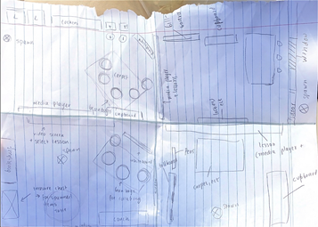
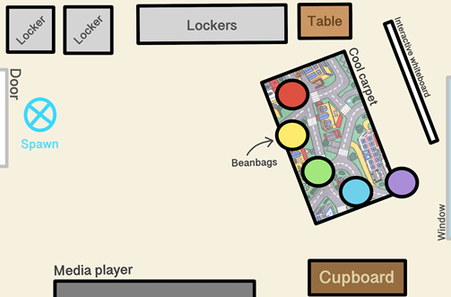
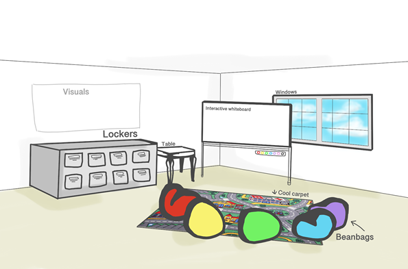

Week 1 - Brainstorming & Design
In week 1, we progress through timeline phases 1 (brainstorming lessons) and 2 (world design/plan). Alisa and Beverly were assigned to design the educational VR world whilst the other group members all designed a classroom lesson.
World Design: Alisa & Beverly Collectively, we designed four floor plans for our Project World and upon receiving feedback from other group members, produced a final design (Figure 3 & 4). Below (Figure 2) shows our initial design.
Figure 2 - Draft of four floor plans designed by Alissa and Beverly
Figure 3 - Finalized selected floor plan (Birdseye view)
Figure 4 - Finalized selected floor plan (Rough 3D visual)
Due to the project being catered towards 8-12 year olds the design is influenced for those who are young at heart. The inspiration of our classroom model comes mainly from others' experience of being in a class where there are lockers, whiteboards, seats etc, for our team to be able to replicate the educational surroundings of the real world for those in the VR. With these prospects in mind we have devised a simplistic floor plan by having most objects impelled towards the walls and having a more open environment. However, also including a more playfully interactive classroom by adding colour and designs in some furniture, as well as having a functional white board with multicoloured pens implemented. The cool car carpet and the beanbags will invoke nostalgia of a more relaxed time within their learning progression as it is commonly seen in younger years, this will comfort the children utilizing our project thus concluding that learning can be associated with fun. The doability of the design so far is implementable with help from various other artists who have uploaded their models to the public. We are also easily able to work with common shapes, especially rectangular objects such as lockers or cupboards to place into our VR classroom.
Lesson: Physics - Motion - Dante The 8 - 12 year old students will learn in physics; why and how an objects’ mass (volume x density); changes the time it takes for it to reach the bottom of an incline/ramp. They will learn through VR Chat, by using a solid ramp/incline with low friction and multiple rollable interactive items with different masses such as; a bowling ball, ping pong ball, beach ball, tennis ball, or a golf ball. These different sphere-shaped masses will be utilized by allowing the user to roll two of them simultaneously down a ramp, observing which of them get to the bottom of the ramp the quickest. It would also be useful to add a display showing the time it took for each mass to reach the bottom of the ramp. This lesson is unique to VR as the use of VR chat will allow the students to perform the action of rolling the objects down the incline more often and much easier than reality, therefore being able to teach them more efficiently and effectively. In addition, adding the element of VR gives students more motivation and excitement to learn new things as it is a new experience to many and can promote the development of imagination.
Lesson: Biology - Eric A grade school biology lesson. It will be about the lifecycle of a butterfly, from egg to caterpillar to chrysalis and finally to a butterfly. It’ll use a PowerPoint type graphic with a 3D animation of the butterfly life cycle that slowly cycles through. With the PowerPoint offering short snippets of information on every stage of metamorphosis.
Lesson: Math - Charles The year 8 to 12 years old students will learn maths. When children are learning mathematics, they usually feel bored or unable to have patience to learn mathematics. Therefore, a VR classroom can help children increase their interest in learning mathematics. When they are in the VR classroom, they can make all the math problems visualized. For example, simple math like addition and subtraction can be turned into content that children are interested in, such as addition and subtraction between lollipops. When the child does not understand or cannot solve the current math problem, the child can click the help button, the child can immediately see the disintegration idea, and then continue to provide three to four questions to ensure that the child knows how to disintegrate. This course will become unique because this course is not like sitting in a classroom reading a book and doing problems, but in a world of mathematics, where small animals and people dialogue will be provided with math problems, and there are rewards in this world the mechanism is like how many tasks you complete to get rewards or upgrades. Children will spend a lot of time in this world and gain knowledge of mathematics while playing games.
Lesson: English - Kaylyn The 8-12 year olds will practice spelling different words through the use of a ‘magnetic’ whiteboard and letter props. Similar to a spelling test except with the whole class’ participation, words will be put up on the board with the letter props, except with missing letters / gaps. The lesson will also make use of images of the words being projected up on the whiteboard. The students will then be prompted to fill the missing gaps with the letter props. When a letter is placed in the incorrect spot, the letter prop will automatically drop. When a letter is placed in the correct spot, the letter will stick to the whiteboard. Once a word is completed, the VR controller will vibrate along with a sound prompt, and a new word will be put up on the whiteboard.
Lesson: Human Anatomy - Vansh The 8-12 year old students will learn about the different organs in the human body and its functions, such as the eyes, heart and skin. Like how they function as well as what they look like and where they are in the body and a visual representation of the whole body at work. As a sort of mini test the parts would be removed for each person with them having to put the body parts back where they belong. If it is placed in the wrong body part the body part will be dropped automatically. When they are correct the controller would vibrate indicating that they got it right. This would be unique to VR as they are in control of the parts themselves and can control them using their hands and can feel it, instead of using a mouse and keyboard, this would be a lot more interactive as making it a lot more memorable and understandable for them. The body would use a mixture of both objects with gravity as well as objects without gravity. There would also be media players to show them how the body works.